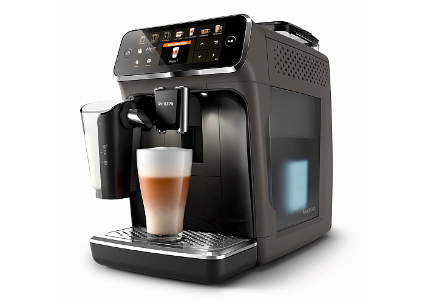
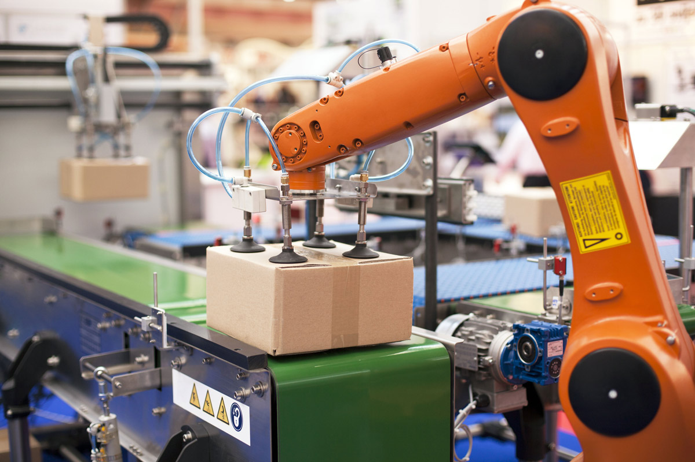

¿Qué es la automatización?
La automatización es el conjunto de elementos o procesos informáticos, mecánicos y electromecánicos que operan con mínima o nula intervención del ser humano. estos normalmente se utilizan para optimizar y mejorar el funcionamiento de una planta industrial, pero igualmente puede utilizarse la automatización en un estadio, una granja o hasta en la propia infraestructura de las ciudades.
La retroalimentación y la capacidad de hacer ajustes con esa información es la que indica que tan autosuficiente es un sistema automatizado, un brazo robótico que se utiliza en el armado de autos es un ejemplo de alta independencia, ya que con sus sensores y su programación puede ejecutar su tarea sin intervención humana, un tanque de leche que solo tiene un sensor de temperatura, pero el apagado o prendido del mismo se hace de forma manual es un ejemplo de un sistema semiautomatizado.
La automatización consiste en usar la tecnología para realizar tareas casi sin necesidad de las personas. Se puede implementar en cualquier sector en el que se lleven a cabo tareas repetitivas. Sin embargo, es más común en aquellos relacionados con la fabricación, la robótica y los automóviles, así como en el mundo de la tecnología, como el software de decisiones empresariales y los sistemas de TI.
La automatización de procesos industriales o automatización industrial es en sí misma la aplicación de maquinarias y equipos de tecnología (Software y hardware), que sean capaces de llevar todo tipo de procesos de producción, selección y control de manera autónoma, es decir, con la mínima participación de personal humano posible.Estos también llamados sistemas de automatización buscan controlar labores mecánicas, que normalmente requerirían mucho esfuerzo y personal agregado, de manera óptima, ininterrumpida y minimizando posibles errores.
Con la combinación inteligente de maquinaria, es posible automatizar casi toda línea productiva hoy día.



Tipos de Automatización
Sistema de automatización fija
Es la opción recomendable en procesos cuyas piezas fabricadas son todas idénticas. Se trata de una automatización que no permite personalización, sino que se encarga de producir lo mismo a grandes volúmenes. El costo de implementación de tecnología de automatización fija es bajo, pero ésta se encuentra limitada y resulta difícil incorporar a esa línea o proceso la producción de otro tipo de producto o bien, el mismo pero con adecuaciones.
Leer menos
Sistema de automatización programable
Este tipo de tecnología se utiliza para fabricar productos por lotes.
Leer más
Sistema de automatización flexible
Es una forma más sofisticada y refinada de automatización programable.
Leer más
Sistema Integrado de Automatización
Es un conjunto de máquinas, procesos y datos independientes, que trabajan de forma sincrónica bajo el mando de un único sistema de control
Leer más